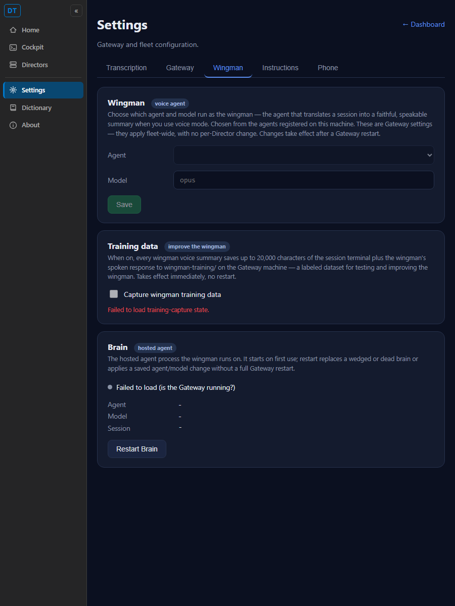

GatewayTurnBriefAgent (the always-on warm-brain stamping machine) and its
OnBriefStored wiring in GatewayHost.cs.TurnEndWatcher now calls
WingmanVoiceService.GenerateAsync directly for VOICE sessions on turn-end, and keeps
clearing the stale voice/text cache on the Working transition. It no longer depends on any brief agent.SessionAssessments and the issue #186 assessed-state refutation (Option A) and
the PostAssessmentAsync push-down: "needs you" reverts to the Director's raw mechanical signal.wingman_enabled (WingmanConfig), the
CC_TURNBRIEFS kill switch, GatewayTurnBriefAgent.Disabled, the
GET/PUT /gateway/wingman endpoints, and the hidden "Enable the Wingman" checkbox in
settings.html.GetTurnBriefsAsync/LoadWingmanAsync
load path (story column, chapters, brief feedback); Terminal is the default tab, Voice stays. Learning's
"Ask Wingman" is now always available (the wingman brain is always configured).BrainSupervisor - voice mode uses that
exact brain to translate. Only the always-on CONSUMER was removed.| # | Acceptance criterion | Expected | Actual (proof) | Result |
|---|---|---|---|---|
| 1 | With no wingman_enabled anywhere, the Gateway starts without the turn-brief pipeline and logs no brief stamping. |
Startup log shows the watcher starting voice-only; no GatewayTurnBriefAgent / brief stamping lines. |
Live Gateway (new code) log line: [GatewayHost] StartAsync: starting the turn-end watcher (voice auto-refresh only; turn-brief pipeline retired in #549). Counts: GatewayTurnBriefAgent=0, wingman_enabled=0, CC_TURNBRIEFS=0, brief-stamping=0. See gateway-startup.log. |
PASS |
| 2 | A voice session whose turn finishes on its own still gets its spoken summary regenerated automatically (voice auto-refresh works without the brief pipeline). | A hands-off turn-end (Working→WaitingForInput) on a voice session triggers WingmanVoiceService.GenerateAsync with no brief agent. |
Captured run TurnEndWatcherVoiceRefreshTests (the exact wiring GatewayHost installs): 3/3 pass - voice session fires GenerateAsync, non-voice does not, Working re-entry clears the cache. See captured-run-voice-autorefresh.txt. |
PASS |
| 3 | The "N need you" count and the red/yellow/green session dots behave exactly as before. | SessionOrdering.EffectiveColor (the dot/needs-you source) is unchanged and never reads the assessed state. |
Source shows EffectiveColor folds OnHold → Explaining → Briefing → VoicePreparing → StatusColor - no AssessedState. The only writer of AssessedState is removed, so it is always null and every "AssessedState ?? ActivityState" falls through to the raw ActivityState. 31 SessionOrdering tests pass. See criterion3-needs-you-dots-unchanged.txt. |
PASS |
| 4 | The Cockpit no longer shows the "Wingman" briefs center tab and no dead fetch to the brief store remains. | No "Wingman" tab button; no GetTurnBriefsAsync/LoadWingmanAsync in Cockpit.razor. |
Center tabs are now only Terminal (default) + Voice. In Cockpit.razor: GetTurnBriefsAsync=0, LoadWingmanAsync=0, _wingmanEnabled=0, CenterTab=="brief"=0. GetWingmanEnabledAsync removed from the Cockpit client. See criterion4-cockpit-wingman-tab-removed.txt. |
PASS |
| 5 | wingman_enabled, CC_TURNBRIEFS, GatewayTurnBriefAgent.Disabled, and PUT /gateway/wingman are gone; the hidden checkbox is removed from settings.html. |
Flag/endpoint absent in code; the toggle endpoint 404s; the settings checkbox is gone. | Live GET /gateway/wingman → HTTP 404. WingmanConfig.cs deleted; no CC_TURNBRIEFS reference remains. Screenshot settings-wingman-tab-after.png shows the Wingman tab with NO "Enable the Wingman" checkbox (only the kept "Capture training data"). See live-rest-endpoints.txt. |
PASS |
| 6 | The configured wingman agent + model settings still load and save, and voice mode still translates using that brain. | The brain block still loads agent + model; BrainSupervisor + the voice translator are intact. |
Live GET /gateway/settings → brain.tool=ClaudeCode, brain.model=opus, 7 agents; PUT /gateway/brain/config retained. BrainSupervisor + WingmanVoiceService/WingmanTranslator kept and built clean. See live-rest-endpoints.txt + settings-wingman-tab-after.png. |
PASS |
| 7 | Entry, exit, and failure logging in the [ClassName] Method: context format on the changed Gateway paths. |
The re-homed paths log in the project format. | Added [GatewayHost] StartAsync: starting the turn-end watcher..., [GatewayHost] turn-end -> voice auto-refresh: sid=..., and [TurnEndWatcher] Start: sweep disabled (test seam)...; existing [WingmanVoiceService] entry/exit/failure logging is preserved. Visible in gateway-startup.log. |
PASS |
WingmanTrainingStore + the capture toggle kept.SessionOrdering.EffectiveColor → StatusColor / ActivityState and never read the assessed
state. Confirmed I did not alter that path (criterion 3).The Wingman tab keeps the agent + model + Save controls (the kept brain settings) and the Brain section.
The always-on "Enable the Wingman" checkbox is gone; the only checkbox is the kept "Capture wingman
training data" (#547). Rendered from this branch's settings.html.

This change alters the CcDirector.Gateway container (a documented component removed, one re-homed),
so docs/cencon/architecture_manifest.yaml was updated in the same change: the
GatewayTurnBriefAgent and TurnEndWatcher / SessionAssessments entries were replaced,
and the turn_brief_flow became voice_auto_refresh_flow. No security posture change
(no new external surface; an endpoint and a config flag were removed).
I believe this is finished. The always-on turn-brief pipeline is retired, voice auto-refresh is re-homed onto the always-running turn-end watcher and proven to fire without a brief agent, the dead flag and endpoints are removed, the Cockpit Wingman tab is gone, and the at-a-glance monitoring (needs-you count + dots) is provably unchanged. The full solution builds clean with zero warnings and the test suites are green.